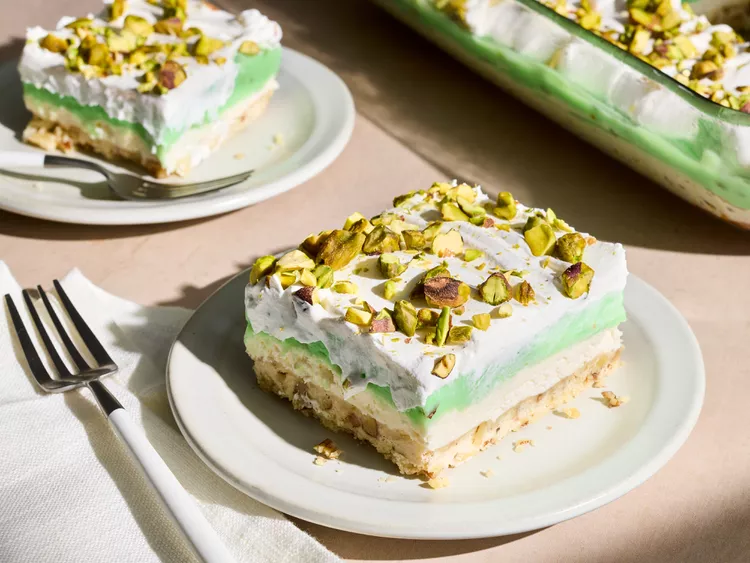

Pistachio Torte

Description
This nostalgic pistachio torte has a nutty shortbread crust layered with cream cheese filling, fluffy pistachio topping, and
whipped topping. Sweet, crunchy, and creamy, it is reminiscent of the happy desserts of childhood.
Ingredients
- cooking spray
- 1/2 cup salted butter, softened
- 1 cup all-purpose flour
- 1/2 cup finely chopped pecans or pistachios
- 1 1/4 cups powdered sugar, divided
- 1 (8 ounce) package cream cheese, softened
- 1 teaspoon vanilla extract
- 1 (8 ounce) carton frozen whipped topping, thawed, divided
- 2 1/2 cups milk
- 2 (3.4-ounce) packages pistachio instant pudding mix
- 1/2 cup chopped pistachios
Steps
- Gather all ingredients.
- Preheat the oven to 350 degrees F (175 degrees C).
Grease a 9x13-inch baking dish with cooking spray.
- Beat butter with an electric mixer in a bowl until fluffy. Beat in flour, pecans,
and 1/4 cup powdered sugar. Spread in an even layer in the prepared dish.
- Bake in the preheated oven until light golden brown, about 18 minutes.
Cool completely on a wire rack, about 45 minutes.
- Beat cream cheese with an electric mixer in a bowl until fluffy. Beat in remaining
1 cup powdered sugar and vanilla until combined. Fold in half of the whipped
topping.
- Spread cream cheese filling evenly over the crust. Chill in the refrigerator for
15 minutes.
- Whisk together milk and pudding mix in a bowl for 2 minutes.
- Pour pistachio pudding evenly over the cream cheese filling. Chill in the
refrigerator until set, about 15 minutes.
- Spread remaining whipped topping over the pudding layer. Top with pistachios, or
top with pistachios just before serving.
- Cover and chill in the refrigerator 3 hours or up to 4 days.
Home